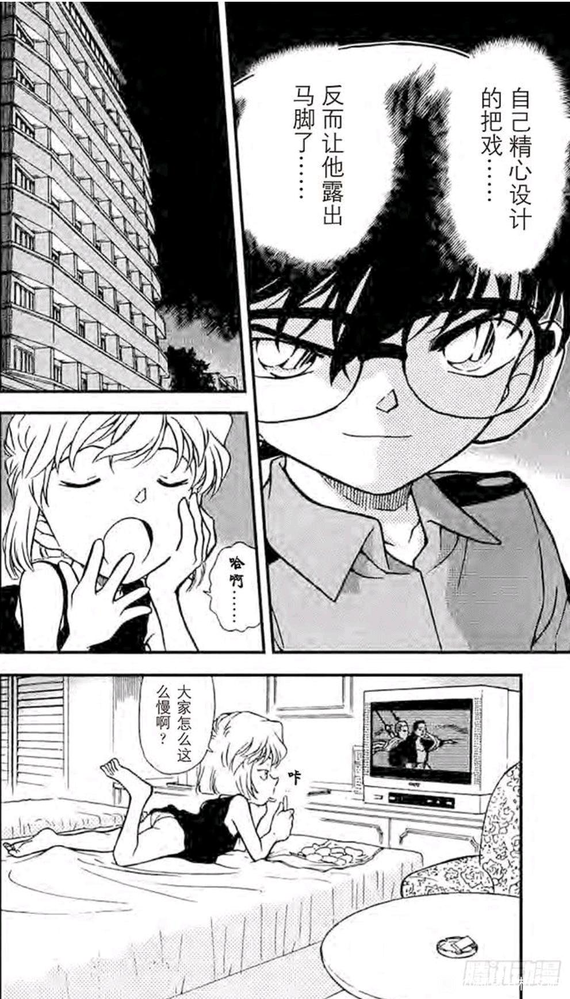
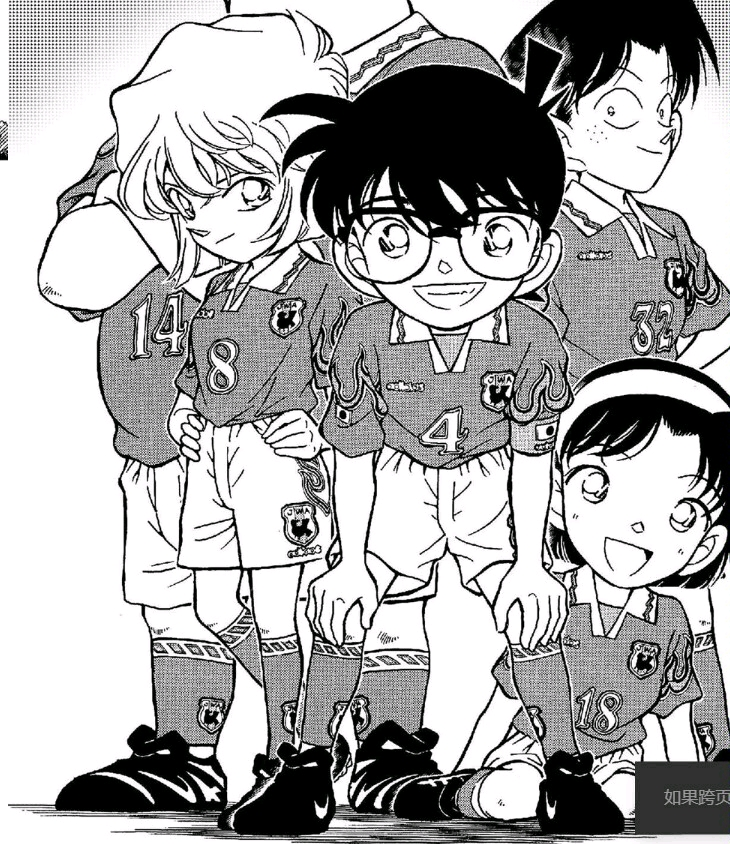

m26上映时间是4月14日，泰坦尼克号沉默也是在这个时间，肯定有大佬知道这个了，哀是老贼的嘴替这个大家都知道，那这个84岁肯定不简单
先放一张图，是311话哀酱在看电视，这个电视是

2023-10-12 20:09 | 星夜º晓:胖次好色哦2023-10-13 09:22 | 刘铁铖:2023-10-13 20:23 | 星之泪POWER:回复 星夜º晓 :那应该是泳装2023-10-13 21:19 | go勿忘凉凉:2023-10-14 00:55 | 贴吧用户_5N451RG:回复 星之泪POWER :人家泳装是黑色的2023-10-14 21:51 | 贴吧用户_5VGNtNA:我是小哀的纯棉苦茶子2023-10-17 12:44 | Youngshu8:


我百度了一下关于泰坦尼克号84岁，结果还真有一个，一个幸存者活到84岁经历了3次重大事故活了下来，这或许对标哀也要经历三次？那哀酱也太惨了
2023-10-12 10:23 | 虚景✨:如果仅针对“哀”这个形态，满月加列车应该已经算两次了吧。如果是按身体受几乎致命伤算，那叛离组织加再会也是两次。m26好像没受啥伤？照你这个理论或许灰原还要经历一次生死危机2023-10-12 10:36 | 贴吧用户_G2VytRX:回复 虚景✨ :可能老贼没想这么夸张，毕竟有点离谱，强行原这个2023-10-12 10:52 | 爱画画的小陈😘:回复 虚景✨ :如果是三次的话，我觉得可能跟小哀身体上大号的关系，因为第一次变大就是受伤了可以说差点死掉，第二次变大那可这是如果不变大的话三小跟小哀都会死在一片火房屋里的，说是“哀形态”应该是“志保形态”2023-10-15 12:09 | 一只晚小安:回复 虚景✨ :那会不会有可能第三次就是决战了，因为现在柯子也在修学篇后被优作把大号封了，小哀也有两次志保形态了都是在危及生命但柯子不在且一时赶不过去的情况下2023-10-15 12:10 | 一只晚小安:回复 虚景✨ :我觉得会不会有可能决战的时候也会有那么一阵柯子不在小哀身边然后出于什么原因比如要和琴酒对刚变回志保最后柯子赶回来两人一起解决最大的仇人这种
老贼在创作情节应该会用一下爱情桥段来叙述故事吧，以上就是一些个人看法，没有太多参考价值
还有一个解释是致敬露丝对杰克84年的爱？她身上带着那颗钻石84年了
反正这话封面也有

2023-10-12 08:58 | 贴吧用户_G2VytRX:不可能，绝对不可能2023-10-12 09:22 | QuantumEntangl:妙啊！2023-10-12 10:33 | 唯一的届不到💖:回复 贴吧用户_G2VytRX :不可能！我兰神天下无敌！只有她空手道救人的份儿，怎么会哭哭啼啼呢？让他退下！ 不可能，我刚才还看到兰神制服歹徒呢2023-10-12 10:38 | 叶小克:步美还穿着小哀的真实年龄2023-10-12 11:08 | sxt6616717:光彦32，元太14，一剪不也是18吗2023-10-12 13:07 | 😺NEKO😾:啊？假的，都是假的，老贼没想这么多2023-10-12 19:53 | 贴吧用户_JSbQW8C:厉害2023-10-12 23:06 | 帕瓦不是屑啊😫:难道他真是天才2023-10-12 23:29 | 贝壳小家:2023-10-13 09:23 | 刘铁铖:太牛了2023-10-13 09:50 | 贴吧用户_7PX2yAy:我去啊啊啊啊84但是少侦都暗示着18呢！2023-10-13 11:34 | 木兮枍-:难道他真的是天才2023-10-13 14:13 | 贴吧用户_GSyCDtX:回复 sxt6616717 :天才！2023-10-13 20:28 | 星之泪POWER:其实我感觉这个更像是，8是灰原的首字母读音，4是新一的首字母读音，日本人很喜欢玩谐音梗，不过一个用假姓一个用真名也怪怪的就是了可能只是巧合2023-10-14 21:53 | 贴吧用户_5VGNtNA:2023-10-15 20:31 | 冰晶是冰:太巧了吧2023-11-14 14:19 | 维为就赵💯:天才！2023-11-15 18:58 | 在想啊什么名字:天才


（大雄的消息.jpg）
有个说法是暗示初遇97-13=84
97-13=842023-10-12 10:05 | 青期º:97是啥2023-10-12 10:27 | Chaos🌐🌸:回复 青期º :哀初登场的漫画是97年出的2023-10-12 10:31 | Chaos🌐🌸:回复 青期º :而且泰坦尼克号电影也是在97年底上映的
记得也有up提到过
动画是95年出的 84会不会是84年呢 新志初遇
2023-10-12 10:10 | 贴吧用户_G2VytRX:抓住一名战犯2023-10-12 10:42 | zero蛋👀👀:一定是那女人，她把boss打至跪地，要把他拿去做辛苦努力啊2023-11-09 00:04 | nusuaihxi:合影
青山在捏他福尔摩斯之外的作品时，大多只会停留在简单的致敬层面上，不然赤安的高达梗要写多少东西？

3

小栗的视频提到过
泰坦尼克号吧
3
3
3
3
3
不是灰原逗你柯的吗
泰坦尼克啊73很爱的
因为时间太久了，所以有些联系在当时可能很容易发觉,现在就模糊了。说个可能违反直觉的事，哀在连载登场和泰坦尼克号上映是同一年哦，而且哀先登场了3个月吧。M26的主角是灰原，在其登场了26年后上映，内容是水下恋爱喜剧，上映时间对应泰坦尼克沉没时间，这种样式美够浪漫吗。
2023-10-16 07:16 | bearaven:灰原=818，今年官方也认了。8+18=26，这个数字在柯的世界里可以算灰原数。青山老爹给亲女儿的待遇可以说就是在你的年送上只属于你的泰坦尼克。
然后柯南的神奇时间，这个事件提到世界杯，4年前日本多哈出局是1994年，日期是1月1日，那对应的现实时间就是1998年1月1日，连载时间应该也差不多就是那时候。泰坦尼克是1997年12月19日美国上映的，换句话说，对应时间内电影根本就还在上映，84这个数字在当时应该会有想到的话会心一笑的感觉。
M26在符号上就是柯南剧场版的泰坦尼克，当然只舍得给柯哀。
初遇论，84岁—>84年，距今13年，而新志初遇最有可能正好在13年前
以初遇论成立的前提的解释这句话的意思:
哀:84年我们见过面哦，还记得我吗
柯:?（不记得了）
以初遇论成立的前提的解释这句话的意思:
哀:84年我们见过面哦，还记得我吗
柯:?（不记得了）